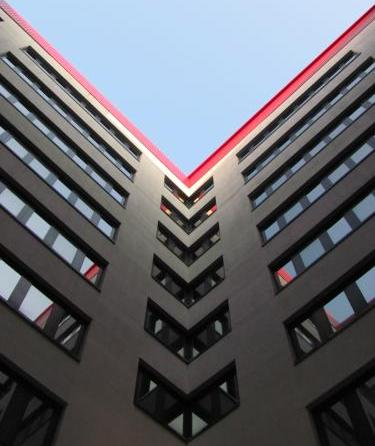

Nuova versione del sito
- Valuta il sito
- Aiutaci a migliorare il nuovo sito compilando il form di valutazione
In primo piano
News

Presentazione dei Corsi di Laurea in Informatica
Obiettivi formativi


Le lauree di questa classe forniscono competenze teoriche, metodologiche, sperimentali ed applicative nelle aree fondamentali dell'informatica che costituiscono la base concettuale e tecnologica per l'approccio informatico allo studio dei problemi e per la progettazione, produzione ed utilizzazione della varietà di applicazioni richieste nella Società dell'Informazione per organizzare, gestire ed accedere ad informazioni e conoscenze. Il laureato in questa classe sara' quindi in grado di concorrere alle attività di pianificazione, progettazione, sviluppo, direzione lavori, stima, collaudo e gestione di impianti e sistemi per la generazione, la trasmissione e l'elaborazione delle informazioni, con l'uso di metodologie standardizzate. I laureati nei corsi di laurea della classe devono:
- possedere conoscenze e competenze nei vari settori delle scienze e tecnologie dell'informazione e della comunicazione mirate al loro utilizzo nella progettazione, sviluppo e gestione di sistemi informatici;
- avere capacità di affrontare e analizzare problemi e di sviluppare sistemi informatici per la loro soluzione;
- acquisire le metodologie di indagine ed essere in grado di applicarle in situazioni concrete con appropriata conoscenza degli strumenti matematici di supporto alle competenze informatiche;
- essere in grado di utilizzare efficacemente, in forma scritta e orale, almeno una lingua dell'Unione Europea, oltre l'italiano, nell'ambito specifico di competenza e per lo scambio di informazioni generali;
- essere capaci di lavorare in gruppo, di operare con definiti gradi di autonomia e di inserirsi prontamente negli ambienti di lavoro.
Sbocchi occupazionali e professionali previsti per i laureati
Gli ambiti occupazionali e professionali di riferimento per i laureati della classe sono quelli della progettazione, organizzazione, gestione e manutenzione di sistemi informatici (con specifico riguardo ai requisiti di affidabilità, prestazioni e sicurezza), sia in imprese produttrici nelle aree dei sistemi informatici e delle reti, sia nelle imprese, nelle pubbliche amministrazioni e, più in generale, in tutte le organizzazioni che utilizzano sistemi informatici. La richiesta di Informatici da parte del mondo del lavoro è particolarmente pressante. Pertanto negli ultimi anni l'assorbimento dei laureati in Informatica da parte del mondo del lavoro è stato totale.
E' da ritenersi che questo scenario sia stabile e possa continuare nel futuro. Le figure professionali principali sono: l'analista programmatore, l'esperto di sviluppo e gestione di reti e sistemi informatici, l'esperto di sistemi di gestione di basi di dati, lo sviluppatore e gestore di siti web. I laureati, inoltre, potranno accedere ai livelli superiori di studio in area Informatica. Ai fini indicati, i curricula dei corsi di laurea della classe:
- comprendono in ogni caso attività finalizzate ad acquisire:
- strumenti di matematica discreta e del continuo
- conoscenza dei principi, delle strutture e dell'utilizzo dei sistemi di elaborazione;
- tecniche e metodi di progettazione e realizzazione di sistemi informatici, sia di base che applicativi;
- conoscenza di settori di applicazione;
- è opportuno inoltre che siano previsti elementi di cultura aziendale e professionale ed elementi di cultura sociale e giuridica;
- devono prevedere in ogni caso, fra le attività formative nei diversi settori disciplinari, lezioni ed esercitazioni di laboratorio ed inoltre congrue attività progettuali autonome e congrue attività individuali in laboratorio;
- prevedono, in relazione a obiettivi specifici, attività esterne, come tirocini formativi presso aziende, strutture della pubblica amministrazione e laboratori, oltre a soggiorni di studio presso altre università italiane e estere, anche nel quadro di accordi internazionali.